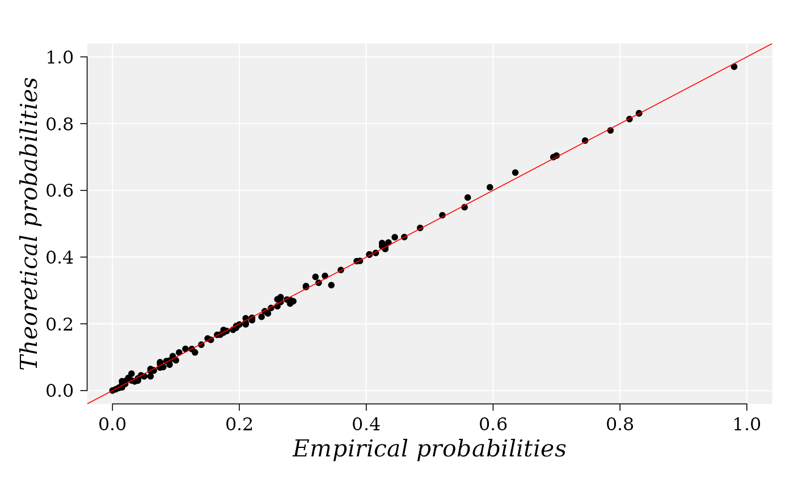

ppCplot.RdThe function build the P-P plot of Two-dimensional Copulas upon
the knowledge of the margin distribution provided by the user. The
empirical probabilities are computed using function
empCopula from package
[copula-package]{copula}.
ppCplot(
X,
Y,
copula = NULL,
margins = NULL,
paramMargins = NULL,
npoints = 100,
method = "ml",
smoothing = c("none", "beta", "checkerboard"),
ties.method = "max",
xlab = "Empirical probabilities",
ylab = "Theoretical probabilities",
glwd = 1.2,
bgcol = "grey94",
gcol = "white",
dcol = "red",
dlwd = 0.8,
tck = NA,
tcl = -0.3,
xlwd = 0.8,
ylwd = 0.8,
xcol = "black",
ycol = "black",
cex.xtitle = 1.3,
cex.ytitle = 1.3,
padj = -1,
hadj = 0.7,
xcex = 1.3,
ycex = 1.3,
xline = 1.6,
yline = 2.1,
xfont = 3,
yfont = 3,
family = "serif",
lty = 1,
bty = "n",
col = "black",
xlim = c(0, 1),
ylim = c(0, 1),
pch = 20,
las = 1,
mar = c(4, 4, 2, 1),
font = 3,
cex = 1,
seed = 132,
...
)Numerical vector with the observations from the first margin distribution.
Numerical vector with the observations from the second margin distribution.
A copula object from class Mvdc or
string specifying all the name for a copula from package
copula-package.
A character vector specifying all the parametric marginal distributions. See details below.
A list whose each component is a list (or numeric vectors) of named components, giving the parameter values of the marginal distributions. See details below.
Number of points used to build the P-P plot. The
A character string specifying the estimation method to be used
to estimate the dependence parameter(s) (if the copula needs to be
estimated) see fitCopula.
character string specifying whether the empirical
distribution function (for F.n()) or copula (for C.n()) is computed (if
smoothing = "none"), or whether the empirical beta copula (smoothing =
"beta") or the empirical checkerboard copula (smoothing = "checkerboard")
is computed (see empCopula.
character string specifying how ranks should be computed
if there are ties in any of the coordinate samples of x; passed to
pobs (see empCopula.
A label for the x axis, defaults to a description of x.
A label for the y axis, defaults to a description of y.
Grid line width.
Grid background color.
Grid line color
Diagonal line color.
Diagonal line color.
The length of tick marks as a fraction of the smaller of the width or height of the plotting region. If tck >= 0.5 it is interpreted as a fraction of the relevant side, so if tck = 1 grid lines are drawn. The default setting (tck = NA) is to use tcl = -0.5.
The length of tick marks as a fraction of the height of a line of text. The default value is -0.5; setting tcl = NA sets tck = -0.01 which is S' default.
X-axis line width.
Y-axis line width.
X-axis line color.
Y-axis line color.
Cex for x-axis title.
Cex for y-axis title.
adjustment for each tick label perpendicular to the reading direction. For labels parallel to the axes, padj = 0 means right or top alignment, and padj = 1 means left or bottom alignment. This can be a vector given a value for each string, and will be recycled as necessary.
adjustment (see par("adj")) for all labels parallel (‘horizontal’) to the reading direction. If this is not a finite value, the default is used (centring for strings parallel to the axis, justification of the end nearest the axis otherwise).
A numerical value giving the amount by which axis labels should be magnified relative to the default.
On which margin line of the plot the x & y labels must be
placed, starting at 0 counting outwards
(see mtext).
An integer which specifies which font to use for x & y
axes titles (see par).
Graphical parameters
(see par).
A numerical value giving the amount by which plotting text and symbols should be magnified relative to the default. This starts as 1 when a device is opened, and is reset when the layout is changed, e.g. by setting mfrow.
An integer used to set a 'seed' for random number generation.
Other graphical parameters to pass to functions:
abline, mtext and
axis.
The P-P plot and invisible temporary object with the information to build the graphic which can be assigned to a variable to use in further plots or analyses.
Empirical and theoretical probabilities are estimated using the
quantiles generated with the margin quantile functions. Nonlinear fit of
margin distributions can be previously accomplished using any of the
functions fitCDF, fitdistr, or function
fitMixDist for the case where the margins are mixture of
distributions. npoints random uniform and iid numbers from the
interval [0, 1] are generated and used to evaluate the quantile margin
distribution functions. Next, the quantiles are used to compute the
empirical and theoretical copulas, which will be used to estimate the
corresponding probabilities.
fitCDF, fitdistr,
fitMixDist, mutualinf, and
bicopulaGOF.
set.seed(12)
margins <- c("lnorm", "norm")
## Random variates from normal distributions
X <- rlnorm(200, meanlog = -0.5, sdlog = 3.1)
Y <- rnorm(200, mean = 0, sd = 6)
cor(X, Y) ## Correlation between X and Y
#> [1] -0.0126086
parMargins <- list(
list(meanlog = 0.5, sdlog = 3.1),
list(mean = 0, sd = 10)
)
copula <- "normalCopula"
## The information to build the graphic is stored in object 'g'.
g <- ppCplot(
X = X, Y = Y, copula = "normalCopula", margins = margins,
paramMargins = parMargins, npoints = 100
)
